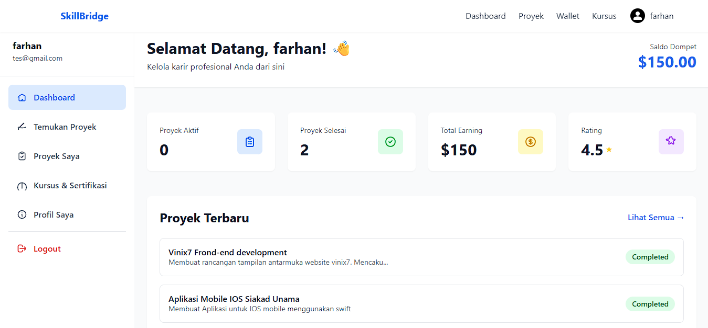
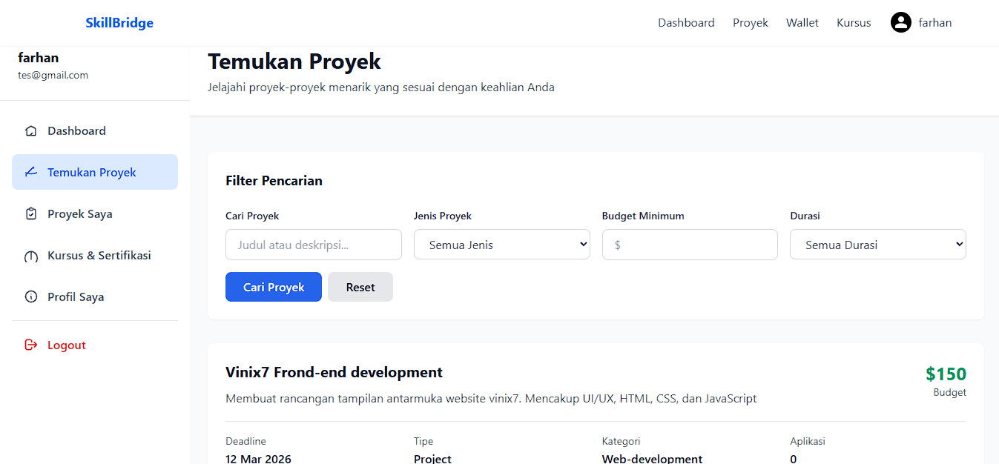
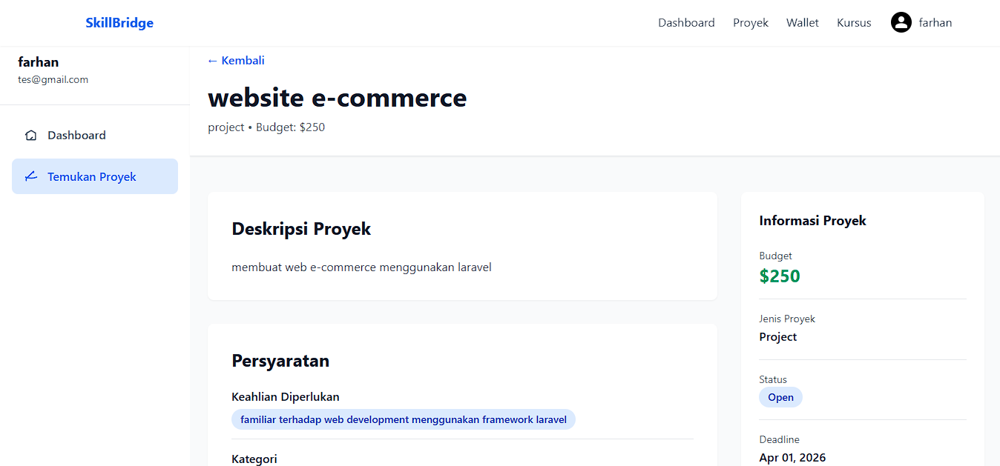
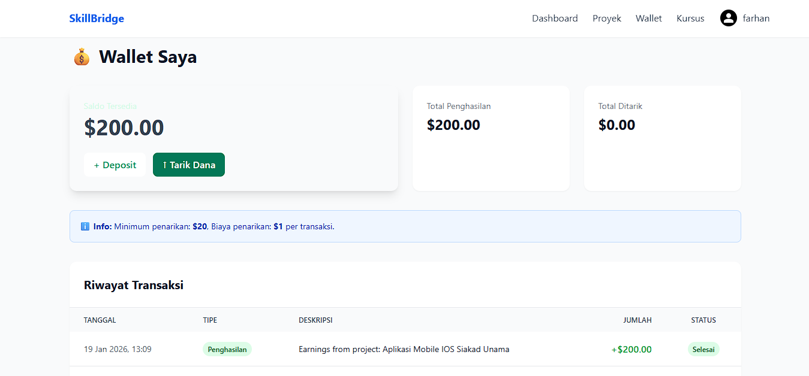
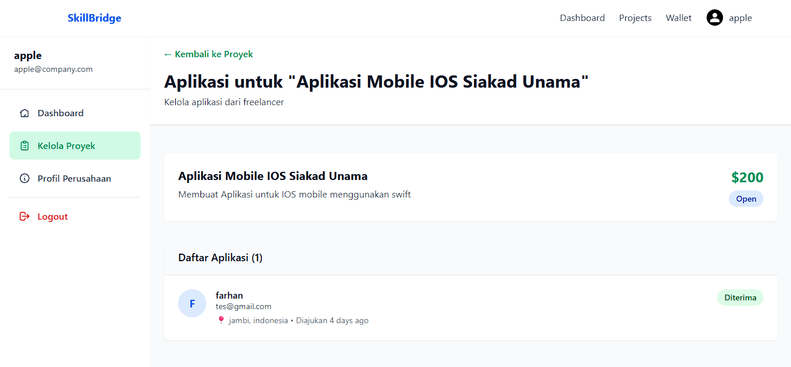
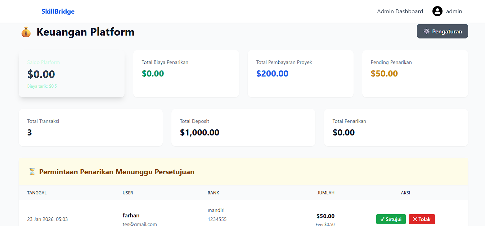

A job posting platform that bridges Indonesian freelancers and talent with overseas companies. It began as a frontend-focused project during my internship at Vinix7 and later evolved into a full-stack Laravel application for my undergraduate thesis.
Skillbridge Global was developed during my internship in the Web Dev & UI/UX division at Vinix7. The project focused on creating an elegant frontend experience for users searching and posting jobs. After the internship, I continued developing the same concept into a full-stack application using Laravel to complete my thesis.

Overview page for users to monitor their activity and project status.

Search and filter experience for finding suitable job opportunities.

Detailed view of project description, requirements, and budget information.

Transaction and earnings tracking for freelancers.

Company-side management for handling posted projects and applicants.

Administrative financial dashboard and withdrawal handling overview.
Designed to connect Indonesian freelancers with international employers through a structured platform.
Built with a strong UI/UX foundation during internship collaboration with a small development team.
Expanded into a full-stack Laravel implementation to support my final thesis completion.
HTML, CSS, JavaScript, responsive UI design, and user-centered layout implementation.
Laravel framework, authentication, data management, and business logic development.
Bridge Indonesian freelancers and talents with international work opportunities.